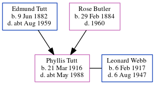

Phyllis Jessie Clara Webb (née Tutt) 1916 - c1988
[ Home ] | [ Calendar ] | [ Surnames Index ] | [ Census Index ] | [ Family History ]A domestic servant and the 4th of 7 children of Edmund Tutt (a bricklayer's laborer) and Rose Butler (a laundress), Phyllis Tutt, the second cousin once-removed on the father's side of Nigel Horne, was born in St Lawrence, Thanet, Kent, England on Mar 21, 19161,2,3,4. She married Leonard Webb (a commercial driver) in St Lawrence on Mar 30, 19405.
During her life, she was living at 20 Grosvenor Road, St Lawrence, Thanet, Kent, England on Jun 19, 19211; and at 7 Prospect Terrace, Ramsgate, Kent on Sep 29, 19392.
She died c. May 1988 in Canterbury, Kent, England4.
Parents
- Edmund Thomas was born on Jun 9, 1882
- Rose was born on Feb 29, 1884
Citations
- 1921 Census Of England & Wales - Findmypast (was age 5 and the daughter of the head of the household)
- 1939 Register - Findmypast (was recorded at this address)
- England & Wales births 1837-2006 - Findmypast
- England & Wales deaths 1837-2007 - Findmypast
- England & Wales Marriages 1837-2005 - Findmypast
Media
Thanet Advertiser - 5 Apr 1940

England & Wales births 1837-2006 - BMD/B/1916/2/AZ/001499/132
England & Wales marriages 1837-2005 - BMD/M/1940/1/AZ/001563/130
England & Wales deaths 1837-2007 - BMD/D/1988/6/77048762
1939 Register Transcription - TNA-R39-1764-1764C-022-15
1921 Census of England & Wales - GBC/1921/RG15/04480/0163/06
Family Tree
Generated by ged2site. Last updated on Jun 11, 2024